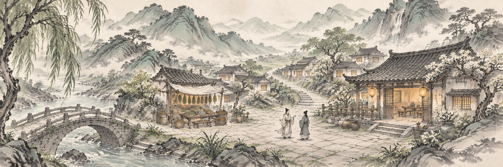
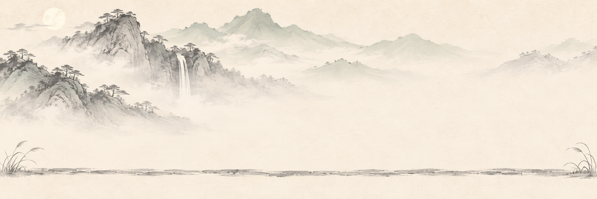

ĐÔNG CHÂU / THANH VÂN
Thanh Hà trấn
Nước chảy dưới cầu, người ghé quán bên sông.
↔


Men theo sơn đạoTiếng nước xa dần, núi hiện qua sương.
Bấm các dấu trong tranh để ghé địa điểm hoặc gặp người.
Nhật ký hành trình
- Đặt chân đến Thanh Hà trấn, bên dòng nước đầu xuân.
Một nơi, một bức tranh
Bấm quán trà, sạp thuốc hoặc người trong tranh để tương tác. Chọn địa điểm phía trên để đi sang nơi khác; hành trình hiện thành cuộn tranh núi sông.
Khung cảnh giữ nguyên bố cục; sương chuyển nhẹ, không có nhân vật chạy ngang.
Demo trải nghiệm riêng · Hành trình và dịch vụ dùng dữ liệu minh họa, chưa kết nối mô phỏng của game.